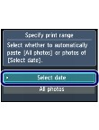
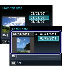
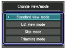
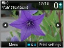
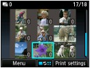
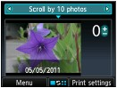
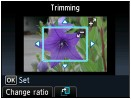
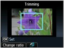

You can print photos in various ways when you use the left Function button to select Menu on the photo selection screen. You can also use the useful functions to print photos.
For details, refer to the on-screen manual: Advanced Guide.
 Functions in the Card Menu
Functions in the Card MenuOn the card menu screen, you can select DPOF print, Select doc. print, Select photo print, Print all photos, or Slide show.
 Note Note
For details on Select doc. print, see Printing PDF Files Saved on the Memory Card / USB Flash Drive. |
 Print All Photos
Print All PhotosIf Print all photos is selected, you can print all photos on the memory card or USB flash drive at one time. You can also print only photos in a specified date range.
Search for photos by date
You can specify a date range and print only the photos in that range.
 
Other Useful FunctionsBesides the functions selected on the card menu screen, you can specify the display style of photos, cropping, photo fix, date print, etc.
For details, refer to the on-screen manual: Advanced Guide.
Changing the DisplayTo display the Change view/mode screen, press the center Function button on the photo selection screen.
The Standard view mode shows a single photo. The List view mode shows 9 thumbnails. The Skip mode lets you scroll in units of 10 or 100 photos, or by date. The Trimming mode lets you crop photos.
 |
|||
 |
 |
 |
 |
Standard view mode |
List view mode |
Skip mode |
Trimming mode |
Cropping PhotosOn the Trimming screen, you can use the [+] or [-] button to change the cropping size and use the  ,
,  ,
,  , or
, or  button to change the cropping area. Press the OK button to apply the changes, then return to the photo selection screen.
button to change the cropping area. Press the OK button to apply the changes, then return to the photo selection screen.

Correcting PhotosWhen Auto photo fix is selected for Photo fix on the Print settings screen, suitable correction for each photo is made automatically.
Auto photo fix |
Printing Photos with Shot DateIf ON is selected for Print date on the Print settings screen, the selected photos can be printed with shot date.
Print date |